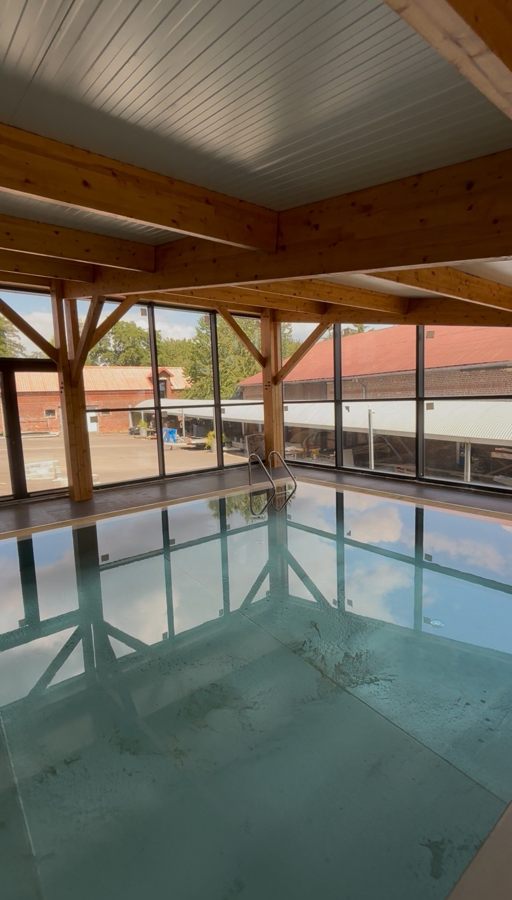
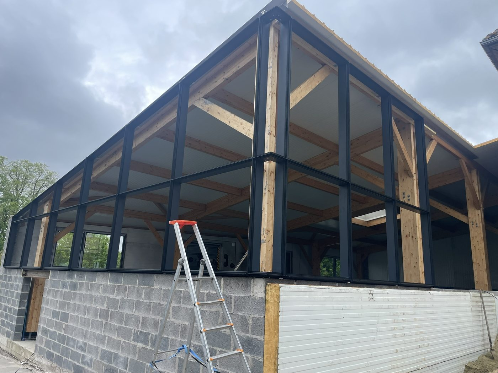
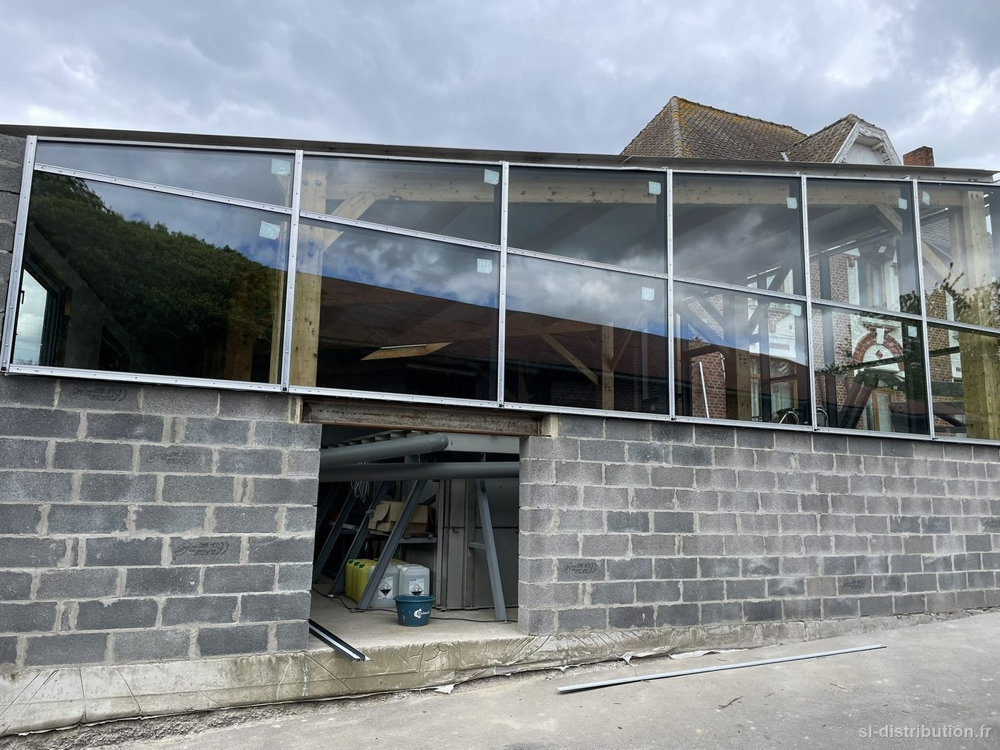
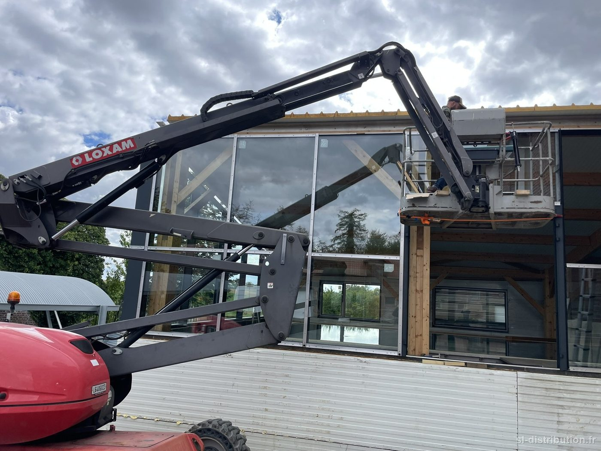
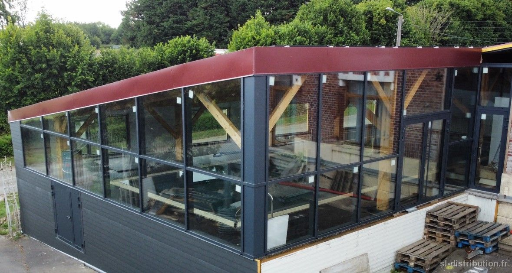

- Chantier — Particulier
Un espace piscine chez un particulier, fermé par de grandes menuiseries vitrées.
Autour d'un bassin, l'enjeu n'est pas seulement la lumière : l'humidité et la condensation mettent les matériaux à l'épreuve toute l'année. Le choix des menuiseries et de leur finition s'y fait plus soigneusement qu'ailleurs.




